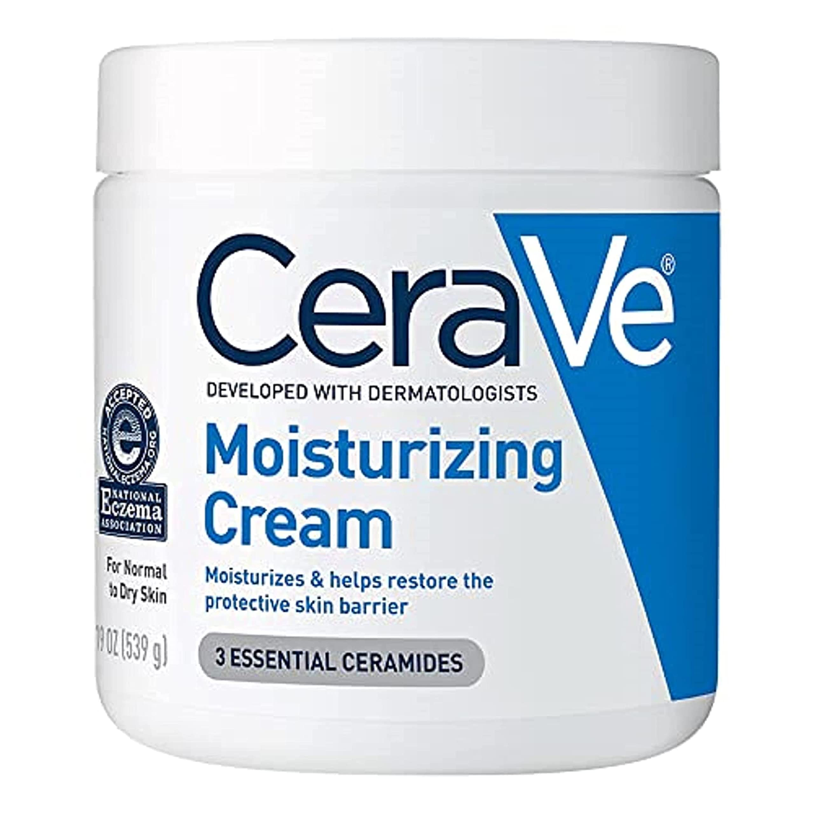

Best Skincare routine
Posted by
Rukhshar Khan on Wednesday, September 27th 2023
The best skincare routine involves
daily cleansing, moisturizing , and
sunscreen in the morning. At night,
double cleanse, apply treatments as needed,
exfoliate weekly, and use nourishing masks occasionally.
Stay hydrated, maintain a healthy diet, and get enough sleep for a
glowing complexion. Consistency and personalized care are
essential for great results.
Skin Care Tips Before You Start
Three Main Steps
Think of your skin-care routine as consisting of three main steps:
- Cleansing — Washing your face.
- Toning — Balancing the skin.
- Moisturizing — Hydrating and softening the skin.
Cleansing — Washing your face
Cleansing is the vital process of purifying and
refreshing something, whether it's our body, mind, or environment. It
involves the removal of impurities, toxins, or unwanted elements to
restore a state of cleanliness and balance. Cleansing rituals are common
in various aspects of life, from detoxifying our bodies through dietary
cleanses to decluttering our living spaces for a sense of clarity and
order. Cleansing can also extend to our emotional well-being, as we seek
to cleanse our minds of negative thoughts or past burdens, allowing us to
embrace a renewed sense of inner peace and vitality. Ultimately, cleansing
is a powerful practice that helps us reset and revitalize, promoting
overall health and well-being.
Certainly, here's a recommended cleansing product in list form:
-
Cetaphil Gentle Skin Cleanser: A mild and
non-irritating cleanser suitable for all skin types, including
sensitive skin. It's known for its gentle cleansing action and is
often recommended by dermatologists.
-
La Roche-Posay Toleriane Hydrating Gentle Cleanser
This hydrating cleanser is designed for sensitive and dry skin. It
helps remove impurities while maintaining the skin's natural moisture
barrier.
-
Bioderma Sensibio H2O Micellar Water: A micellar
water that cleanses and removes makeup without the need for rinsing.
It's a favorite among those with sensitive skin due to its gentle
formula.
-
Kiehl's Ultra Facial Cleanser: A pH-balanced cleanser
suitable for all skin types, this product effectively cleanses without
stripping the skin of its natural oils. It's particularly popular for
everyday use.
-
Garnier SkinActive Micellar Cleansing Water:Another
micellar water option that effectively removes makeup and cleanses the
skin. It's available in various formulations for different skin
types..
Remember to choose a product that aligns with your skin type and any
specific concerns you may have, and consider doing a patch test if you
have sensitive skin or are trying a new product for the first time.
Toning — Balancing the skin
Toner is a fundamental component of a skincare routine,
often used after cleansing and before applying other skincare products.
This versatile liquid not only helps remove any remaining traces of dirt
and makeup but also serves several essential purposes for the skin. Toners
work to balance the skin's pH level, ensuring it's at its optimal state
for absorbing subsequent products like serums and moisturizers.
Additionally, toners can provide hydration, soothe irritation, and even
deliver beneficial ingredients such as antioxidants and anti-aging
compounds to the skin. Depending on the formulation, toners can cater to
various skin types, from oily and acne-prone to dry and sensitive, making
them a valuable step in achieving healthier, more radiant skin.
Incorporating a toner into your skincare routine can contribute to a more
balanced, refreshed, and nourished complexion.
Certainly, here's a recommended toner in list form
-
Paula's Choice Skin Balancing Pore-Reducing Toner: This toner is designed to balance oily or combination skin while
minimizing the appearance of pores. It contains antioxidants to help
protect the skin from environmental damage.
-
Klairs Supple Preparation Unscented Toner: An
unscented and hydrating toner that's excellent for sensitive skin. It
helps to balance and prepare the skin for the next steps in your
skincare routine.
-
PIXI Glow Tonic: This exfoliating toner contains
glycolic acid and is well-regarded for its ability to promote
smoother, more radiant skin by gently removing dead skin cells. It's
suitable for most skin types.
-
The Ordinary Glycolic Acid 7% Toning Solution:
Another glycolic acid-based toner, this product is designed to improve
skin texture and clarity. It can be particularly effective for those
looking to address concerns like uneven skin tone or mild congestion.
-
Laneige Cream Skin Toner & Moisturizer: A hybrid
toner-moisturizer formula that deeply hydrates the skin. It's ideal
for dry or dehydrated skin and helps lock in moisture.
Moisturizing — Hydrating and softening the skin
Moisturizeris a skincare essential that plays a pivotal role in maintaining skin health. It's a hydrating product designed to replenish and lock in moisture, keeping the skin softsuppleand
comfortable
em>Moisturizers come in various formulations tailored to different skin types, from lightweight lotions for oily skin to richer creams for dry skin. Beyond hydration, they often contain ingredients like antioxidants, vitamins, and sunscreen to address specific skin concerns and protect against environmental damage. Regular use of a moisturizer helps maintain the skin's natural moisture balance, prevents dryness and flakiness, and can contribute to a smoother, healthier complexion. Incorporating a suitable moisturizer into your daily skincare routine is key to achieving and maintaining radiant and well-nourished skin.
Certainly! Here's a moisturizer recommendation:
CeraVe Moisturizing Cream:This moisturizer is suitable for a wide range of skin types, including dry and sensitive skin. It contains ceramides, hyaluronic acid, and glycerin to provide long-lasting hydration and strengthen the skin's natural barrier. It's a non-greasy option often recommended by dermatologists for everyday use.

Clinique Dramatically Different Moisturizing Lotion+: A classic moisturizer that has been a staple in many skincare routines. It's dermatologist-developed and provides all-day hydration for a wide range of skin types
La Roche-Posay Toleriane Double Repair Face Moisturizer:A hydrating option suitable for sensitive skin. It includes ceramides and niacinamide to strengthen the skin barrier and soothe irritation
Olay Regenerist Micro-Sculpting Cream:This anti-aging moisturizer is known for its hydrating and firming properties. It contains ingredients like niacinamide and peptides to improve skin texture and reduce the appearance of fine lines and wrinkles.
Neutrogena Hydro Boost Water Gel: A lightweight gel-based moisturizer that is ideal for those with oily or combination skin. It's formulated with hyaluronic acid to provide intense hydration without a heavy feel.
Thank You for Reading!!!